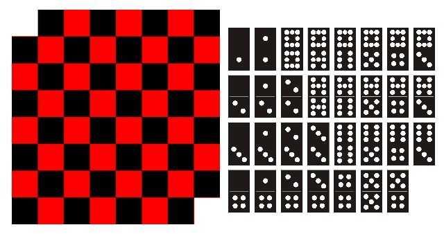

En esta página están resueltos dos de los acertijos propuestos. Para el primero hay dos métodos de resolución. El segundo no tiene una solución posible.
Consiste en un cuadrado dividido en 16 cuadrados más pequeños. La pregunta es ¿cuántos cuadrados ves?
def suma_iterada(n):
resultado = 0
i = 1
while(i <= n):
resultado = resultado + i**2
return resultado
numero = int(input("Ingrese un numero natural:"))
print(suma_iterada(numero))
Sabemos que la respuesta es la suma de los cuadrados de los numeros enteros de 1 hasta 4. Con esto en cosideración, el código propuesto es una iteración de los cuadrados de los numeros naturales para un caso general en donde n es la dimensión del cuadrado. A medida que la iteración se va llevando a cabo, se suma en la variable resultado los-valga la redundancia- resultados anteriores.
Acá está la segunda resolución al problema. Esta vez, utilizando el producto interno del vector cuyos elementos están dados por todos los numeros naturales entre 1 y n.
import numpy as np
def suma_(n):
v = np.arange.(1,n+1)
sqr = (np.inner.(1,n+1))
return sqr
numero = int(input("Ingrese un numero natural:"))
print(suma_(numero))
Esta solución tuvo en consideración las suposiciones mencionadas en Cuadrados 1. Como solución queremos la suma de los cuadrados de los numeros naturales menores o iguales al tamaño de tabla elegido. Dado que el producto interno de un vector consigo mismo es la suma de los cuadrados de sus elementos, basta definir un vector cuyas entradas sean los números naturales entre 1 y n y efectuar dicha operación.
Para el siguiente acertijo supongamos que a un tablero de 8×8 se le eliminan dos esquinas diagonalmente opuestas, dejando 62 casillas. ¿Es posible colocar 31 piezas de dominó de tamaño 2×1 recubriendo todo el tablero?
Como está mencionado en el encabezado, no es posible colocar las piezas de dominó tal que cubran la totalidad de la superficie deseada.
La razón es la siguiente:
Cada pieza de dominó ocupa necesariemente dos casillas: una roja y una negra. Por ende, al haber sido eliminadas dos esquinas cuyos colores coinciden, habrá dos espacios del color opuesto vacíos.
Como observación a este problema podemos decir que si se eliminan dos casillas del mismo color, dondequiera que estén ubicadas, no se podrán colocar las 31 piezas de dominó recubriendo todo el tablero.
Para comenzar con la experiencia del cliente, en la página se le presentaría el acertijo con una imagen ilustrativa de la grilla.
A continuación se colocaría un input en el cual el cliente ingresaría el tamaño de grilla deseado:
Y se visualizarían en un programa dinámico las distintos cuadrados posibles.
En el siguiente código se puede ver en consola los 16 distintos ploteos de los cuadrados posibles de 1x1
import matplotlib.pyplot as plt
from matplotlib import colors
from numpy import linalg,zeros,matrix,arange
data = matrix(zeros([4,4]))
# creando un colormap discreto
cmap = colors.ListedColormap(['red', 'blue'])
bounds = [0,1,8]
norm = colors.BoundaryNorm(bounds, cmap.N)
for i in range(4):
for j in range(4):
data[i,j]=1
fig, ax = plt.subplots()
ax.imshow(data, cmap=cmap, norm=norm)
# dibujando las lineas
ax.grid(which='major', axis='both', linestyle='-', color='k', linewidth=1)
ax.set_xticks(arange(.5, 4.5, 1));
ax.set_yticks(arange(.5, 4.5, 1));
data[i,j]=0
plt.show()
De esta misma forma se proseguiría con los cuadrados de 2x2, 3x3 y así hasta tener la cantidad ingresada por el cliente.
Cuando la exhibición de los cuadrados finaliza, se ejecutaría uno de los códigos mostrados en Cuadrados.